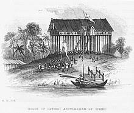
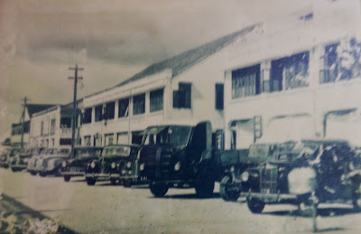

HISTORY OF SARIKEI
Datuk Patinggi Abdul Rahman's House, 1840
The Sigalang community was the first to settle in the Sarikei area 300 years ago, located between the Sarikei and Nyelong rivers. They were skilled farmers, hunters, and house builders, named after their fair and just headman who took care of the community. In the 1840s, trade in the Rajang River was controlled by Malays, with Datuk Patinggi Abdul Rahman being a prominent figure. Rice, beeswax, jungle produce, fine clothes, and dried fish were popular trade items. Rajah James Brooke visited Sarikei in 1845 and established a fort in 1856 to combat piracy. Syarif Masahor gained control of Sarikei from 1849 to 1861, but his rule ended when the fort was burned down. The Brooke family eventually took over the administration of Sarikei.
In 1864, the Hoklo and Cantonese people arrived in Sarikei and lived alongside Malays near the riverside. They engaged in chicken rearing, vegetable farming, and later expanded into grocery businesses and trading with Singapore companies. Shophouses were built using timber, which eventually grew in number. Due to safety concerns, the shophouses were ordered to migrate inland, while the river remained the main transportation route. Warehouses and wharves were constructed to support increased shipping frequencies. Chinese schools also began to emerge. During World War II, Japanese troops occupied Sarawak, causing chaos in Sarikei. After the war, Sarawak was liberated and became a British crown colony. In 1952, Cathay cinema was opened.

Jalan Repok, Old Sarikei
Initially, there were land disputes between the Chinese and indigenous people, but boundaries were drawn with Rajah's intervention. The cultivation of black pepper and rubber plantations thrived in the 1940s and 1950s, respectively. The Sarikei Chinese Chamber of Commerce was established in 1932 to protect Chinese commercial interests. In 1954, a tax increase led to a strike organized by the chamber of commerce, but it ultimately failed to stop the taxation. In the 1950s, Sarikei was under the jurisdiction of Sibu Division, and in 1973, it became the sixth division of Sarawak to counter the communist insurgency. In 2002, Matu, Daro, and Tanjung Manis districts were separated from Sarikei to form the Mukah Division. As a result, Sarikei Division was left with Sarikei, Pakan, Meradong, and Julau districts.
Back To Top